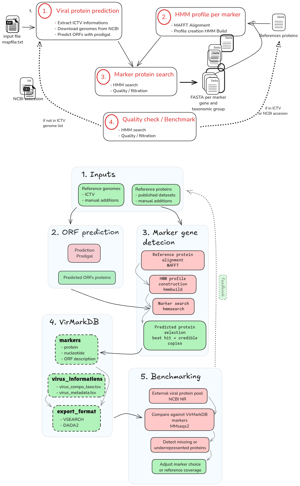

Workflow
Workflow overview
VirMarkDB documents how the database is generated, how marker-specific HMM profiles are built and applied, and how the database is refined through benchmark-guided detection of missing or underrepresented diversity.

Workflow figure not found.Copy
input/workflow.excalidraw.png to docs/assets/workflow.excalidraw.png before rendering.';">
Input and provenance
ICTV resources
The initial genome manifest and associated taxonomy are derived from the ICTV Virus Metadata Resource VMR_MSL41.v1.20260320, released on 2026-03-20.
The VMR provides virus names, ICTV identifiers, taxonomy from Kingdom to Species, GenBank accession information, genome composition, and host-source metadata.
Additional genome inputs
Manually added genomes are listed in:
input/manual_genomes_ncbi.tsvThe table below is rendered from input/manual_genomes_ncbi.tsv when the file is available at render time.
Show input/manual_genomes_ncbi.tsv
| virus_id | Kingdom | Phylum | Class | Order | Family | Genus | Species | Source | Virus_names | Virus_names_abrv | Host_source |
|---|---|---|---|---|---|---|---|---|---|---|---|
| NC_075136 | Bamfordvirae | Nucleocytoviricota | Megaviricetes | Imitervirales | Allomimiviridae | Oceanusvirus | Oceanusvirus kaneohense | MANUAL_NCBI | Tetraselmis virus 1 | TsV1 | algae |
| PP728251 | Bamfordvirae | Nucleocytoviricota | Megaviricetes | Algavirales | Phycodnaviridae | Prasinovirus | Prasinovirus micromonas polaris | MANUAL_NCBI | Micromonas polaris virus | MpoV-46T | algae |
| NC_076895 | Bamfordvirae | Nucleocytoviricota | Mriyaviricetes | NA | Yaraviridae | Yaravirus | Yaravirus brasiliensis | MANUAL_NCBI | Yaravirus brasiliensis | BHMG | protists |
Marker-group configuration
The workflow uses input/mapfile.tsv to define which marker genes are processed for each taxonomic scope.
Each row in this file defines one marker group, corresponding to the association between:
- one marker gene;
- one taxonomic scope;
- one reference protein set;
- one HMM profile to build and apply.
This file is used during reference preparation, HMM construction, and HMM search to ensure that each genome is searched only against the marker profiles relevant to its taxonomic scope.
Show input/mapfile.tsv
| group_id | taxo_rank | taxo_value | marker | marker_group_id | manual_file |
|---|---|---|---|---|---|
| nucleocytoviricota | Phylum | Nucleocytoviricota | majorcapsid | majorcapsid_nucleocytoviricota | majorcapsid_nucleocytoviricota.tsv |
| nucleocytoviricota | Phylum | Nucleocytoviricota | dnapol | dnapol_nucleocytoviricota | dnapol_nucleocytoviricota.tsv |
| nucleocytoviricota | Phylum | Nucleocytoviricota | atpase | atpase_nucleocytoviricota | atpase_nucleocytoviricota.tsv |
| nucleocytoviricota | Phylum | Nucleocytoviricota | primase | primase_nucleocytoviricota | primase_nucleocytoviricota.tsv |
| nucleocytoviricota | Phylum | Nucleocytoviricota | rnapol1 | rnapol1_nucleocytoviricota | rnapol1_nucleocytoviricota.tsv |
| nucleocytoviricota | Phylum | Nucleocytoviricota | rnapol2 | rnapol2_nucleocytoviricota | rnapol2_nucleocytoviricota.tsv |
| nucleocytoviricota | Phylum | Nucleocytoviricota | tf2s | tf2s_nucleocytoviricota | tf2s_nucleocytoviricota.tsv |
| nucleocytoviricota | Phylum | Nucleocytoviricota | vltf3 | vltf3_nucleocytoviricota | vltf3_nucleocytoviricota.tsv |
Taxon-specific marker gene detection
During database construction, each taxonomic group is handled separately. For example, Nucleocytoviricota are processed as a distinct taxonomic scope, with their own selected marker genes and their own marker-specific reference protein sets.
This design allows VirMarkDB to build taxon-aware HMM profiles. Instead of forcing highly divergent viral lineages into a single broad marker model, each marker group receives its own alignment and its own HMM profile.
This configuration is reported in:
input/mapfile.tsvThis configuration is reported in input/mapfile.tsv, each row defines one marker group, corresponding to the association between:
- one marker gene;
- one taxonomic scope;
- one reference protein set;
- one HMM profile to be built and searched.
Show input/mapfile.tsv
| group_id | taxo_rank | taxo_value | marker | marker_group_id | manual_file |
|---|---|---|---|---|---|
| nucleocytoviricota | Phylum | Nucleocytoviricota | majorcapsid | majorcapsid_nucleocytoviricota | majorcapsid_nucleocytoviricota.tsv |
| nucleocytoviricota | Phylum | Nucleocytoviricota | dnapol | dnapol_nucleocytoviricota | dnapol_nucleocytoviricota.tsv |
| nucleocytoviricota | Phylum | Nucleocytoviricota | atpase | atpase_nucleocytoviricota | atpase_nucleocytoviricota.tsv |
| nucleocytoviricota | Phylum | Nucleocytoviricota | primase | primase_nucleocytoviricota | primase_nucleocytoviricota.tsv |
| nucleocytoviricota | Phylum | Nucleocytoviricota | rnapol1 | rnapol1_nucleocytoviricota | rnapol1_nucleocytoviricota.tsv |
| nucleocytoviricota | Phylum | Nucleocytoviricota | rnapol2 | rnapol2_nucleocytoviricota | rnapol2_nucleocytoviricota.tsv |
| nucleocytoviricota | Phylum | Nucleocytoviricota | tf2s | tf2s_nucleocytoviricota | tf2s_nucleocytoviricota.tsv |
| nucleocytoviricota | Phylum | Nucleocytoviricota | vltf3 | vltf3_nucleocytoviricota | vltf3_nucleocytoviricota.tsv |
The rationale for splitting a marker across multiple marker groups is sequence divergence. For example, majorcapsid proteins from Poxviridae and Mimiviridae can be too divergent for a single HMM profile to cover both lineages reliably. Defining separate marker-group rows allows each lineage to be represented by a profile calibrated on lineage-specific reference sequences.
During the HMM search step, genome_marker_map.tsv is used to determine which genomes fall within each marker group’s taxonomic scope and therefore which HMM profiles must be applied to each genome.
HMM profile resources
Marker HMM profiles are built from marker-group-specific reference protein sets stored in:
output/references_protein/Reference proteins come from three source types:
| Source type | Description |
|---|---|
| Published reference datasets | Initial conserved NCLDV marker-protein reference set |
| Manual curation | Added when a marker was missing or poorly represented |
| Benchmark-guided additions | Added after benchmark analysis to improve marker coverage |
General workflow
ORF prediction
ORFs are predicted from each genome using Prodigal in metagenomic mode.
Alignment
Marker-group reference proteins are aligned with MAFFT.
HMM profiles
Alignments are converted into HMM profiles with HMMER hmmbuild.
HMM search
ORF proteomes are searched with hmmsearch against marker-group profiles.
Hit selection
Best-ranked hits and credible additional copies are retained.
ORF prediction
ORFs are predicted from each genome using Prodigal in metagenomic mode:
prodigal -p metaScript:
scripts/database_generation/02_prodigal.bashReference alignment and HMM construction
Reference proteins are aligned with MAFFT:
mafft --ep 0 --genafpairScript:
scripts/database_generation/03_align_markers.bashAlignments are converted into HMM profiles with HMMER hmmbuild:
hmmbuild <output.hmm> <alignment.fasta>Script:
scripts/database_generation/04_hmmbuild.bashHMM search
Predicted ORF proteomes are searched with hmmsearch.
Each genome is searched only against the marker-group profiles assigned to its taxonomic scope through:
genome_marker_map.tsvScript:
scripts/database_generation/05_hmmsearch.bashHit selection
For each genome × marker-group combination, HMM hits are ranked by increasing e-value and then by decreasing bit score.
The best-ranked hit is always retained. Additional hits are kept only when they are close to the best hit in both score and length.
Script:
scripts/database_generation/06_final_results.R| Filter | Threshold |
|---|---|
| Score ratio relative to the best hit | ≥ 0.80 |
| Length ratio relative to the best hit | ≥ 0.80 |
Benchmark-guided refinement
VirMarkDB is evaluated against a broader Bamfordvirae protein pool extracted from a local NCBI NR database.
The objective of this benchmark is to detect marker diversity that is missing or underrepresented in the current release.
Benchmark steps
| Step | Description | Script |
|---|---|---|
| 1 | Extract a Bamfordvirae protein pool from NR and split it by marker using title-based filters. | scripts/benchmarking/07_scrap_viral_protein_ncbi.bash |
| 2 | Self-align each marker pool to identify isolated or suspicious sequences. | scripts/benchmarking/08_align_pool_vs_pool.bash |
| 3 | Analyse self-alignments and filter likely misannotated proteins. | scripts/benchmarking/09_results_align_pool_vs_pool.R |
| 4 | Compare the filtered pool against the current VirMarkDB marker database. | scripts/benchmarking/10_align_pool_VirMarkDB.bash |
| 5 | Identify proteins not covered by the current VirMarkDB release. | scripts/benchmarking/11_analyse_results_align_pool_VirMarkDB.R |
| 6 | Cluster missing proteins with CD-HIT to reduce redundancy. | scripts/benchmarking/12_clusterise_missing_prot.bash |
Software versions
| Tool | Version |
|---|---|
| R | 4.5.2 |
| Prodigal | 2.6.3 |
| MAFFT | 7.525 |
| HMMER | 3.3.2 |
| BLAST+ | 2.16.0 |
| MMseqs2 | 15.6f452 |
| CD-HIT | 4.8.1 |
A versioned Conda environment is provided in docs/environment.yml for reproducibility.